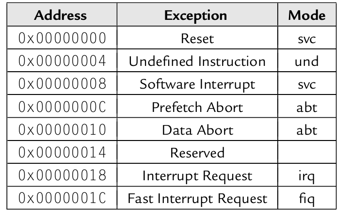
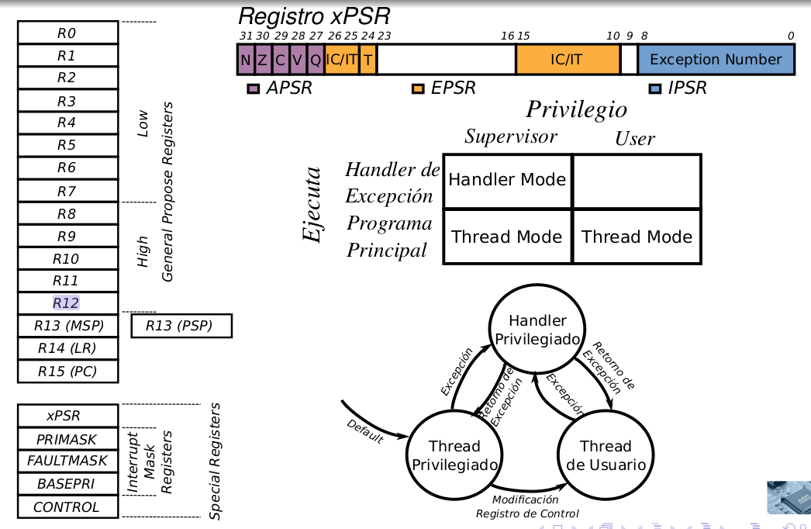
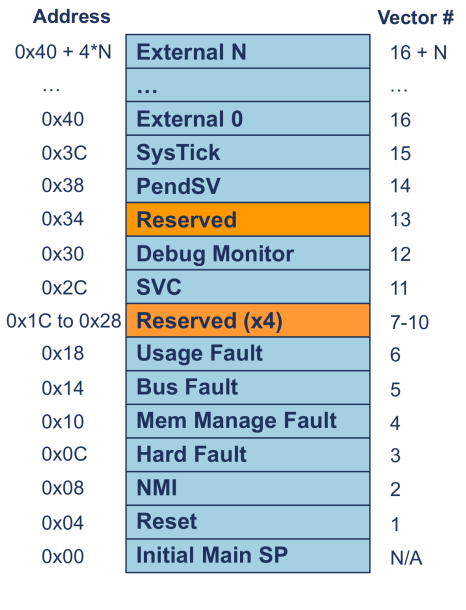

Interruptions
An interruption is any abnormal event that triggers a predefined set of instructions to be executed. There are three types:
- A hardware interruption is asynchronous and not deterministic.
- A software interruption is triggered by code, therefore, deterministic.
- An exception is any internal interruption triggered by the CPU itself, which halts normal instruction execution (Reset, MemoryFault, Opcode error, etc).
The ARMv7 Cortex-R and Cortex-A have 7 operating modes, which are changed depending on the type of interruptions called.
| Mode | Code | Privileges | Description |
|---|---|---|---|
| User | 10000 | Unprivileged | Suitable for most application code. |
| FIQ | 10001 | Privileged | Fast Interrupt. |
| IRQ | 10010 | Privileged | Normal interrupt. |
| Supervisor | 10011 | Privileged | Suitable for running most kernel code. Entered on Reset and on SuperVisor Call (SVC) instruction. |
| Abort | 10111 | Privileged | Data abort exception of prefetch abort exception. |
| Undef | 11011 | Privileged | Intruction related error. |
| System | 11111 | Privileged | Applications that require privileged access. Uses the same "User" mode registers. |
The User mode, being unprivileged, can't access protected system resources or change mode, unless and interruption is raised.
The rest of modes can change freely between modes changing the CPSR register directly.
To change the mode and the interrupt flags, one may use the move status to register, mrs and msr, instructions, but the preferred way is to use the Change Processor State, cps, instruction.
cps <mode>
cps{ie|id} a|i|f {, <mode>} // Interrupt Enable or Interrupt Disable any combination of the "Abort, IRQ, or FIQ" interrupts.
| <mode> | User | FIQ | IRQ | Supervisor | Abort | Undef | System |
|---|---|---|---|---|---|---|---|
| Code | 0x10 | 0x11 | 0x12 | 0x13 | 0x17 | 0x1B | 0x1F |
In the next image, we can see that the first 5 bits of the CPSR correspond to the operation mode, while the bits [8:5] correspond to the interrupt disable flags.

Some registers are shared between modes, but others are exclusive to that operation mode. As seen in the next image, share registers {r0-r12}, except for the FIQ mode; while each mode has it's own stack pointer, link register and SPSR.

Exception list and the vector table
The vector table is a space in memory where the code execution will branch to in case of an exception.
It's defined as an instruction that loads the program counter with the address of the exception handler 1.
ldr pc, =RESET_handler
ldr pc, =UND_handler
ldr pc, =SVC_handler
ldr pc, =PREF_handler
ldr pc, =ABT_handler
ldr pc, =0x00
ldr pc, =IRQ_handler
ldr pc, =FIQ_handler

The process of handling an interruption is as follows:
-
The Core receives the interrupt and does these steps for us (for example for IRQ):
-
Execute the instruction inside the vector table.
-
Inside the handler, do what's needed.
irq_handler: push {r0-r3, r12, lr} // Store registers, "lr" will be modified bl identify_source // Identify IRQ source (returns on r0 the handler address) bl r0 // Jump to the appropriate handler pop {r0-r3, r12, lr} // Retrieve registers subs pc, lr, #4 // Return to the next instruction before interrupt occurredWhen returning from an interruption, the most common way is to use the syntax
subs pc, lr, #4(the "s" for changing the CPSR is essential, any instruction ending with "s" will copy the SPSR to the CPSR). Because of the way the pipeline of "fetching, decoding and executing" works, the program counter always points to the instruction being "fetched", not the one being processed.Looking at the image, if the program counter is in the first cycle, and we are executing the instruction in the third cycle (pc -8), and the interrupt occurs, then we should return to the second cycle (pc -4).

Here is a list of Exceptions in ARM:
| Exception | Priority | Mode | Base LR value | LR offset (ARM/Thumb) | Preferred Return address | Description |
|---|---|---|---|---|---|---|
| Reset | 1 | svc | Unknown | -/- | - | Complete system initialization. Must load the interrupt vector and setup the memory. |
| Data abort | 2 | abt | Address of aborted instruction | +8 / +8 | lr-8 | Generated by the MMU (Memory Management Unit) when requesting access to an non existing or unauthorized memory region. |
| FIQ | 3 | fiq | Address of next instruction to execute | +4 / +4 | lr-4 | Pin "nFIQ" low. "I=1", "F=1" in the CPSR. |
| IRQ | 4 | irq | Address of next instruction to execute | +4 / +4 | lr-4 | Pin "nIRQ" low. "I=1" in the CPSR. |
| Prefetch Abort | 5 | abt | Address of aborted instruction | +4 / +4 | lr-4 | Fetching an invalid memory address. "I=1" in the CPSR. |
| Software Interrupt | 6 | svc | Address of SVC instruction | +4 / +2 | lr | Enters when the instruction "SVC" is called from the user mode. |
| Undefined Instruction | 6 | und | Address of undefined instruction | +4 / +2 | lr | Executing invalid instruction. |
Nested interrupts
If, while handling an IRQ exception, we reenable the IRQ interrupts and another IRQ triggers, the processor will overwrite the "lr_irq" and the "spsr_irq" registers. Therefore, the return address will be permanently lost. This wouldn't happen if another kind of interruption gets called, because each one has it's own SPSR and LR.
Therefore, the LR_IRQ and the SPSR_IRQ must be saved before reenabling interrupts. However, this must be made from the "System" mode, and not from the same "IRQ" mode.
Let's consider the next example:
// This implementation is faulty.
irq_handler:
sub lr, lr, #4 // Change the link register to the actual return address
srs sp!, #0x12 // Store SPSR and LR in the stack of the IRQ mode stack.
push {r0-r3, r12, lr} // Store registers
cpsie i // Enable IRQ
bl foo // Link register is changed
cpsid i // Disable IRQ
pop {r0-r3, r12, lr} // Retrieve registers
rfe sp! // Return from interrupt, loading the SPSR into the CPSR and the LR into the PC
foo:
nop // Interrupt trigger here, "lr = pc", and can't return from here
mov pc, lr
If an interrupt triggers inside the "foo" function, the link register will be lost. The current program counter (pointing to the "nop" instruction), will be stored in the link register of the IRQ mode, erasing the previous "lr" value which pointed to the "cpsid i" instruction.
To avoid this, we should change to "System" mode, so that the link register doesn't get overwritten.
irq_handler:
sub lr, lr, #4 // Change the link register to the actual return address
srs sp!, #0x1F // Store SPSR and LR in the stack of the System mode stack.
cps #0x1F // Change to System mode
push {r0-r3, r11, r12} // Store registers, r11 is stored to keep 8 byte alignment
cpsie i // Enable IRQ
bl foo // Link register is changed
cpsid i // Disable IRQ
pop {r0-r3, r11, r12} // Retrieve registers
rfe sp! // Return from interrupt, loading the SPSR into the CPSR and the LR into the PC
foo:
nop // Interrupt trigger here.
Now, in case of an interruption, the program counter will be stored in the link register of the IRQ mode, and the link register of the System mode is preserved.
Interrupt controllers
The way hardware interruptions are handled is independent from the processor Core, and each chip may have a different one.
GIC ARM: Generic Interrupt Controller
ARM suggested interrupt controller. It has all the interrupt sources connected and controls their priority, state and masks by a set of memory mapped registers. It's made of two parts:
-
The distributor: which receives all the interrupt sources and has several registers to set their priorities, their state (active, pending, inactive, etc) and establishes to which CPU core they'll be sent to. Interrupts are given an Interrupt ID from 0 to 1020.
-
The CPU interface: which is unique to each CPU core. Receives the IRQs from the distributor.
Therefore, interrupts can be separated in three types:
-
Software Generated Interrupts (SGI) (0-15): generated by writing in the Interrupt Controller Distributor Software Generated Interrupt Registers ICDSGIR. It's used for multi-core synchronization.
-
Private Peripheral Interrupts (PPI) (16-31): generated and used by a determined core (for example, the Systick).
-
Shared Peripheral Interrupts (SPI) (31-1020): generated from and to any core (for example, SPI communication).
When an interrupt appears, it normally follows these steps:
-
The priority and list of cores able to handle the interruption are determined in the Distributor. Their state is changed to Pending or Active and Pending, and eventually feed into the CPU interface, lowering the FIQ or IRQ pins.
-
The CPU's handler function executes, and reads the Interrupt ID from the CPU interface Interrupt Acknowledge Register. Reading from this register set's the interrupt state to "active".
-
Before leaving the handler, it must access the CPU interface End of Interrupt Register and mark the interruption as "completed", so that the GIC can mark it as Inactive.
Differences for Cortex-M microprocessors
-
Cortex-M only works on Thumb mode (either Thumb1 or Thumb2).
-
Only two operation modes: "Handler" for interruptions and "Thread" for user code. Besides, "Supervisor" and "User" indicate the execution privileges.
-
Only one set of registers, except for the "MSP" (Main Stack Pointer) and PSP (Program Stack Pointer), which are changed between handler and thread mode.
-
Interruptions store on the stack automatically
r0-r3, r12, lr, xPSR, pc. -
The interrupt vector holds addresses instead of instructions.
-
The "CPSR" is now called "xPSR", and holds the elements show in the figure.
- In addition to the "xPSR" register, there are 4 more:
- PRIMASK: if "1", enables NMI (Non Maskable Interrupt) and Hard Fault exceptions.
- FAULTMASK: if "1", enables only NMI.
- BASEPRI: 9 bits register; disables all interruptions with higher or equal priority value (lower values mean higher priorities).
- CONTROL[1]: if "1" uses the PSP, if "0" uses the MSP.
- CONTROL[0]: if "1" User Thread Mode, if "0", Supervisor Thread Mode.

The Cortex-M family has its own interrupt controller on chip: The NVIC (Nested Vector Interrupt Controller). It handles multiple interrupt sources, and leaves "pending" the interrupt signals for later processing, depending on their priority.
The most remarkable registers are:
- IPR_xx: Interrupt Priority. Each register has 8 bits of priority for interrupt (4 interrupts per register, total of 60 registers, total of 240 interrupts).
- ISER0-ISER7: Interrupt Set Register. If "1", enables the interruption.
- ICER0-ICER7: Interrupt Clear Enable Register. If "1" is written, disables the interruption.
- ISPR0-ISPR7: Interrupt Set Pending Register. If "1", the interruptions is set "pending" of being executed, probably because a higher priority interrupt is being processed.
- ICPR0-ICPR7: Interrupt Clear Pending Registers. If "1" is written, cleans the pending status.
- IABR0-IABR7: Interrupt Active Register. If "1", indicates which interrupt line is active.
- STIR: Software Trigger Interrupt Register. When written, a software interrupt will be generated identified by the first byte.

-
That's only for Cortex-A and Cortex-R. For Cortex-M, instead of a
ldrinstruction, the processor expects only the address's value as a word such as:.word =RESET_handler. ↩